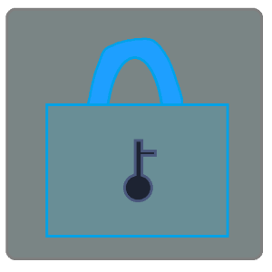

AutoBackup
AutoBackupは、自動でマイクラ統合版のワールドのバックアップを取ることができるソフトです。 特定のフォルダだけのバックアップをとることもできます。

AutoBackupは、自動でマイクラ統合版のワールドのバックアップを取ることができるソフトです。 特定のフォルダだけのバックアップをとることもできます。
WaterSkeletonは、GreyHackというゲームのチートです。 ボタンをクリックして放置するだけで、半自動で大量にお金を稼ぐことができます。
工房鯖は、Minecraftのサーバーです。 主にMekanism・Create・Immersive Engineeringなどの工業化MODを導入して、みんなでわいわい遊んでいます。 工業が好きな人や、工業化MODで遊びたいけど、どうやって始めればいいかわからない人は、ぜひ遊びに来てください。
YUUKIは、Discordの民主政治サポートBOTです。 Discordサーバーの管理を完全に民主化することができます。
MIRAIは、Discordのサーバー管理支援BOTです。 独自の高度な認証システムで安全な運用が可能です。 プライバシーも完全に保護されています。
KOKONEは、Discordの音楽BOTです。 YouTubeとSpotifyの音楽を再生することができます。 URL,検索ワード,プレイリストの再生に対応しています。 音量の調整や、ループ再生や、キューに登録などの一般的な機能は全て備えています。